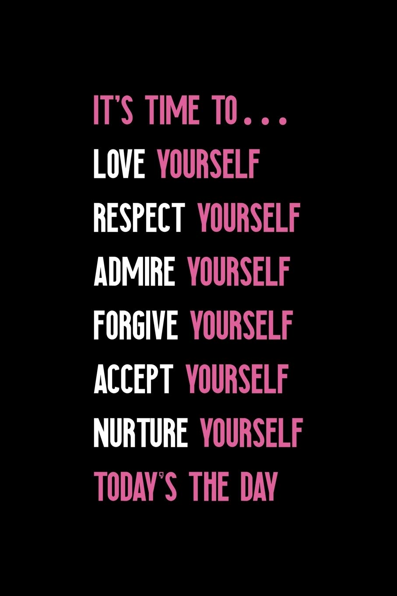
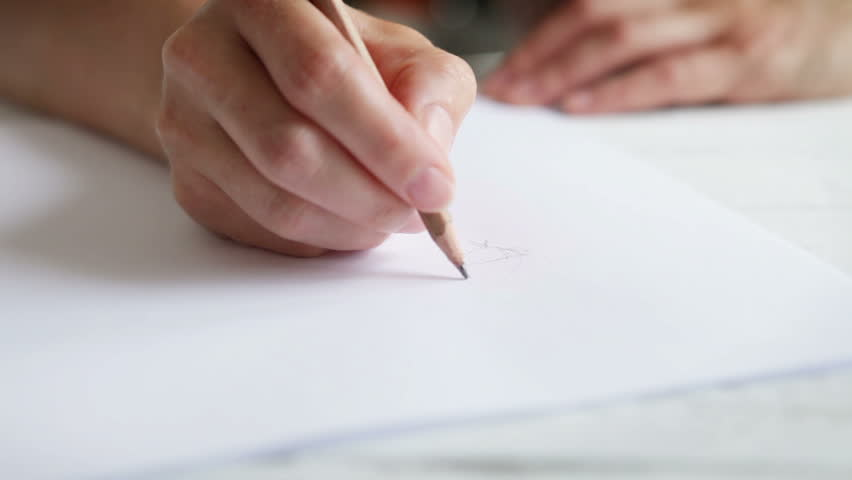
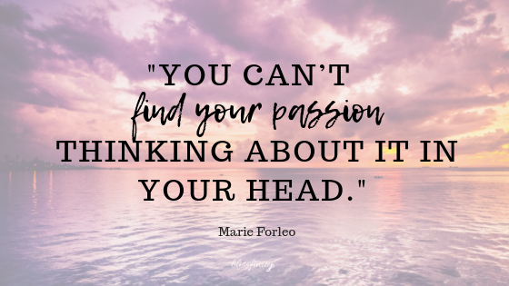
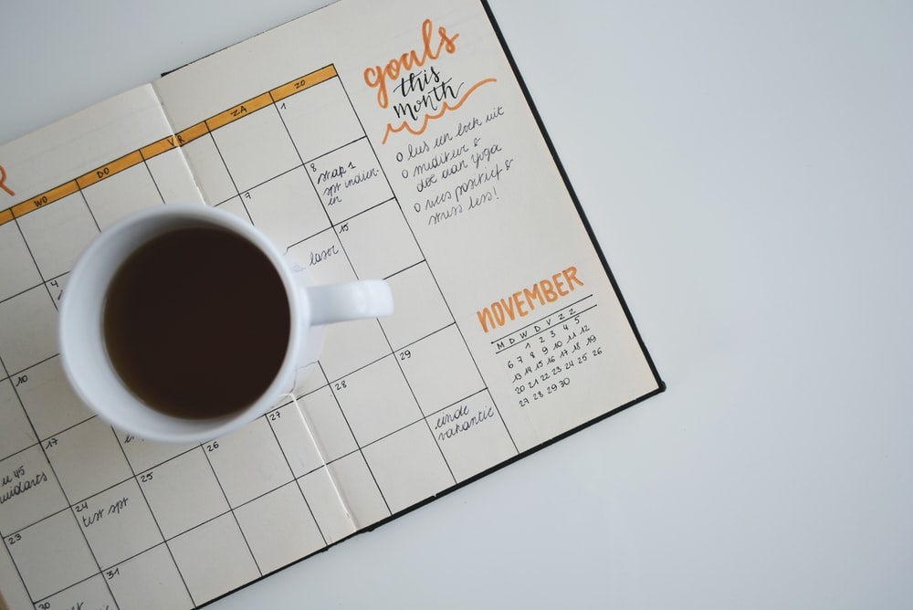
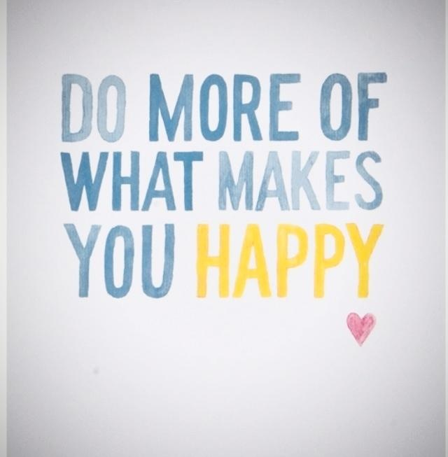
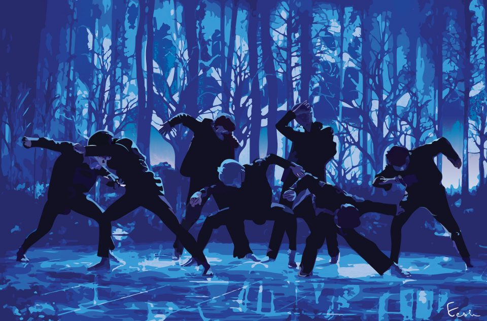
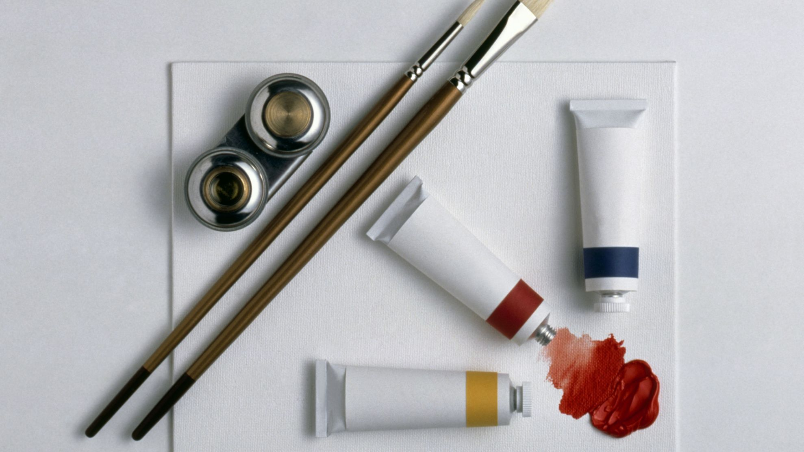
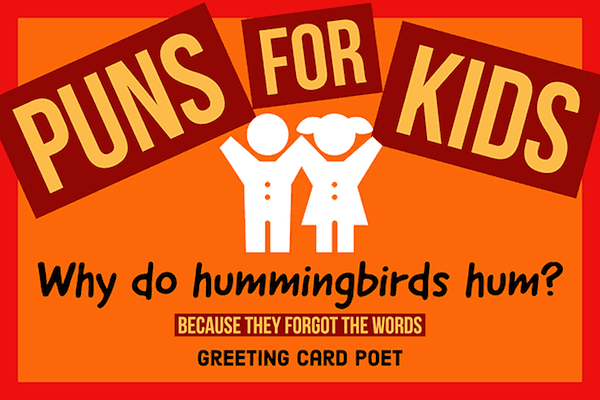
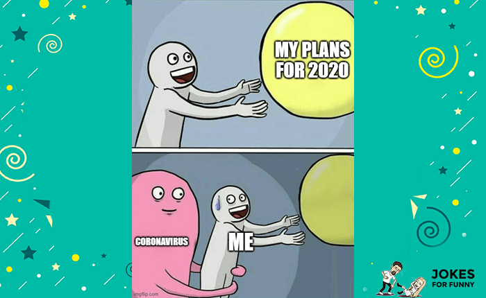

Freepik. (2021). Download Pink Hello In A Speech Bubble Neon Sign Vector for free [Digital Image]. Pinterest. Link.

(2021). [Digital Image]. CFI. Link.

(2020). Watercolor pink texture background – Ethereal looking [Digital Image]. Laptrinhx. Link.

Velarde, O. 90 Modern and Simple Backgrounds [Digital Image]. Visme. Link.
Designs, C. (2019). Lined Diary Notepad [Diary Front Cover]. Amazon. Link.

stockdevil. (2018). Old crumpled paper background Premium Photo [Digital Image]. Freepik. Link.

Jantsch, J. (Year). [Digital Image]. Duck Tape Marketing. Link.

Chow, A. R. (2019). [Digital Image]. Time. Link.

JeonAe. (2018). [Digital Image]. Kpopmap. Link.
Vadym, S. Female artist's hand sketching something with a pencil on a light day [Stock Video]. shutterstock. Link.

(2021). Piano Music Sheet [Digital Image]. musicnotes. Link.

FOTOKITA. (2019). Martial arts fighter stock photo [Digital Image]. iStock. Link.
(2018). Quotes About Finding Your Passion [Digital Image]. blissfinity. Link.

Haque. (2020). Sajek Valley, The Kingdom Of Clouds [Photo]. Porzoton. Link.
(2020). [Photo]. UNB. Link.

Ishikawa, T. Seamless background with lights and halos Free Vector [Digital Image]. Vecteezy. Link.
dooley, i. (2017). Productivity [Digital Image]. Unsplash. Link.

Silvestre, D. (2020). [Digital Image]. Dan Silvestre. Link.
Janssens, E. (2017). Editorial, Business & Work [Digital Image]. Unsplash. Link.

Happy Healthy Strong You. Be Happy, Be Healthy, Be Strong, Be You [Digital Image]. Pinterest. Link.

Christina Carter D. (2018). Sketchbook for children Series [Sketchbook]. Amazon. Link.

balasoiu. (2017). Beautiful hand painted watercolor background Free Vector [Digital Image]. Freepik. Link.
New Hobby [Digital Image]. Quote Master. Link.
Chinmulgund , E. (2020). [Digital]. Rolling Stone India. Link.

(2020). [Digital Image]. Cael. Link.
Kindersley, D. (2019). [Digital Image]. the spruce Crafts. Link.

goftography. (2018). Pastel background with geometric shapes Premium Photo [Digital Image]. Freepik. Link.

Wholistic, K. Doing what you like... [Digital Image]. Pinterest. Link.

Emoji Chart [Chart]. Amazon. Link.

Jenn. (2020). [Digital Image]. Healthy Happy Impactful. Link.

PICARD, C. (2021). [Digital Image]. GH. Link.

Nelson, A. (2020). [Digital Image]. i. Link.
[Digital Image]. Greeting Card Poet. Link.
[Digital Image]. Jokes For Funny. Link.

Cutolo, M. (2021). [Digital Image]. Reader's Digest Canada. Link.

Science Jokes [Digital Image]. hello bio. Link.

Nokia. (2013). Happy Firday, folks! [Format]. Twitter. Link.